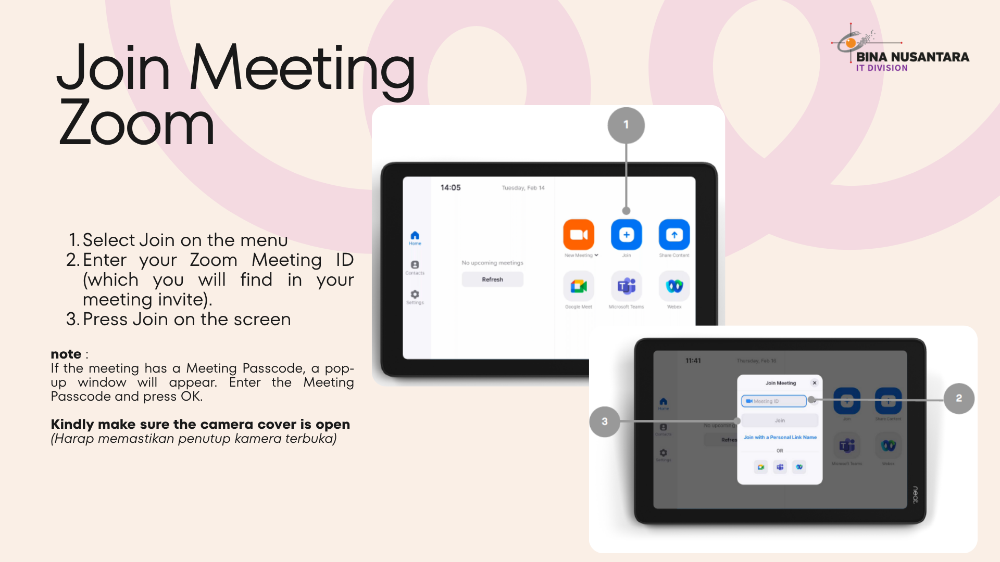
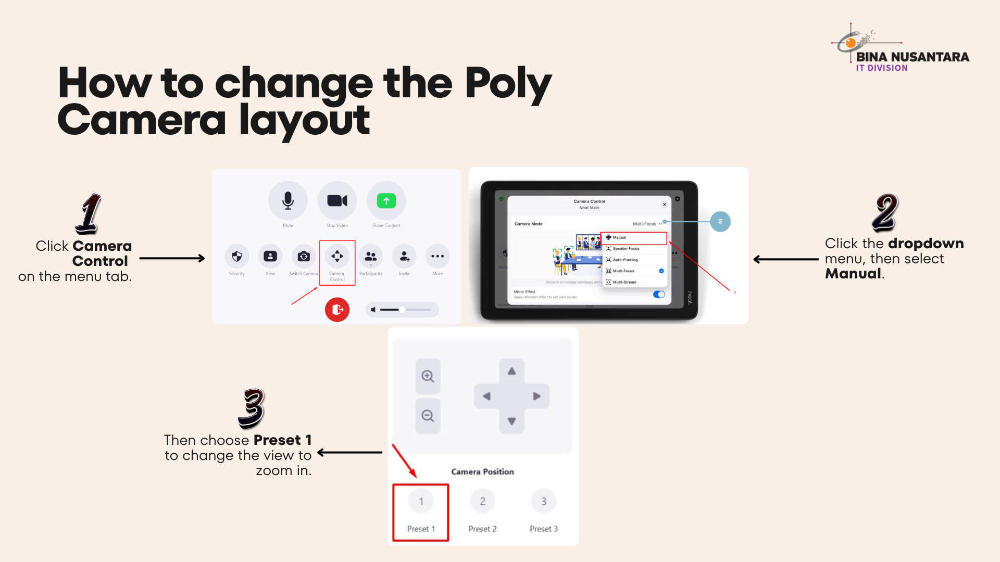
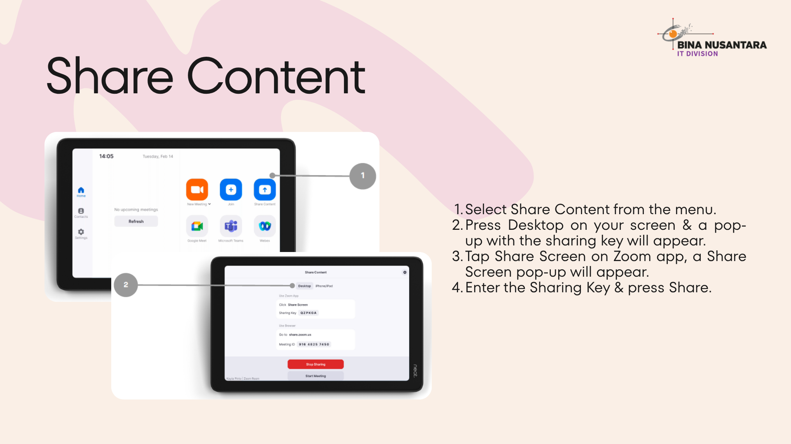

Guideline Poly Studio X50
Learn how to connect your laptop or mobile device to a meeting room equipped with video conferencing tools.
Steps to connect
Step 1:
- If a Zoom Meeting ID has not been created, users can start a meeting directly using the “New Meeting” feature available on the Poly tab.

- If a Meeting ID is already available, you can directly join the meeting through the Poly tab.

Step 2:
Camera Control
Camera Control

Step 3:
Controller Zoom Room
Controller Zoom Room

Share Content (Optional):
Optional: For onsite meetings only (without Zoom participants), you can directly share your screen using the Share Content feature below. On the laptop that will be used for screen sharing, open the Zoom application, select Share Screen, then enter the sharing code displayed on the Share Content tab.
Optional: For onsite meetings only (without Zoom participants), you can directly share your screen using the Share Content feature below. On the laptop that will be used for screen sharing, open the Zoom application, select Share Screen, then enter the sharing code displayed on the Share Content tab.

Tips
- Check network connection
- Restart device if connection fails